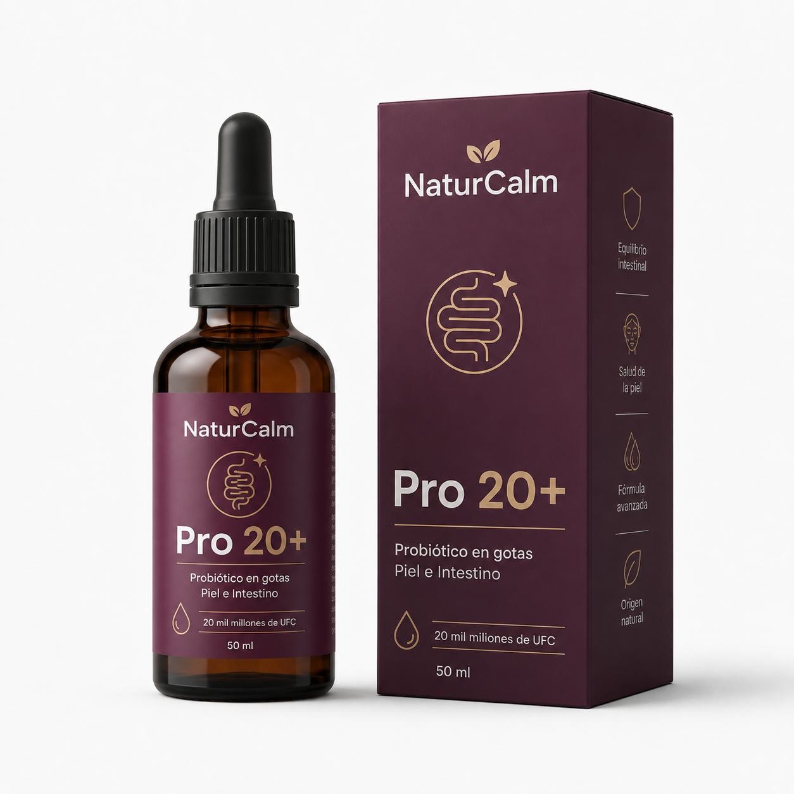
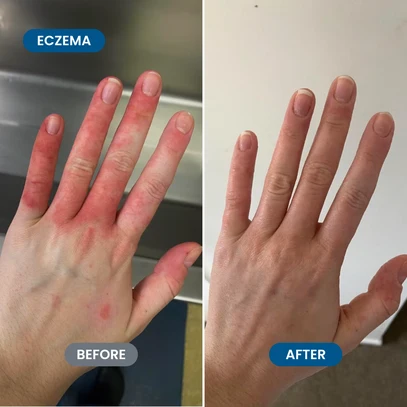
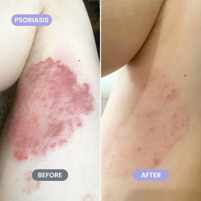
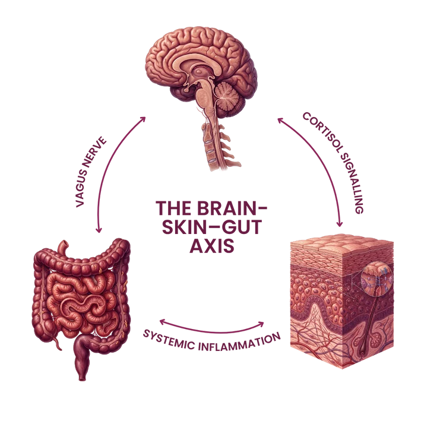
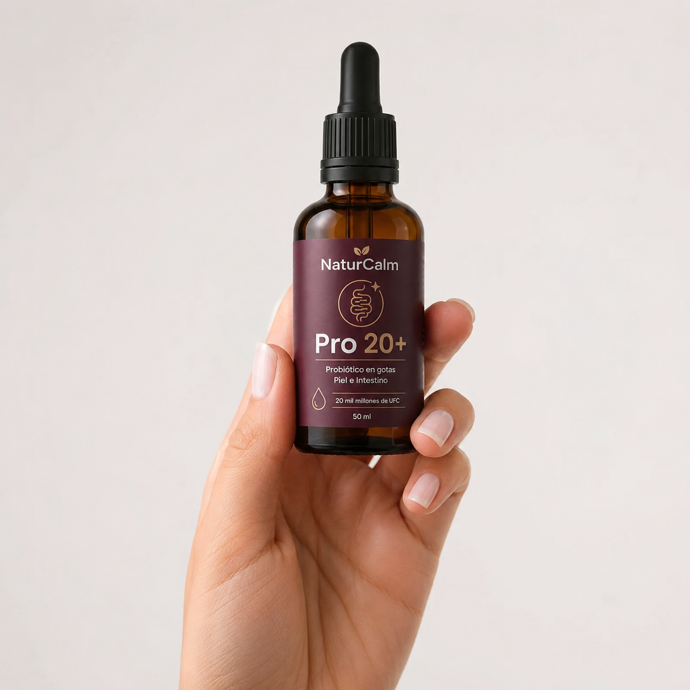
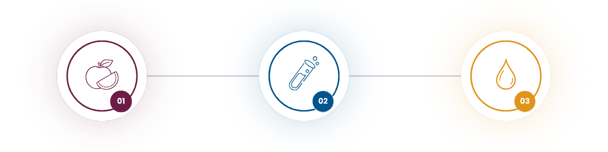

Tu intestino define mucho más que la digestión — moldea tu piel, tu ánimo y tu energía. Pro 20+ aporta 20+ mil millones de cultivos vivos en una sola gota diaria de 1 ml, actuando sobre el eje intestino-piel-cerebro para calmar la inflamación en su origen, antes de que llegue a la superficie.
$34.900
Sé constante. Ahorrá más
Envío gratis en compras de 2 o más unidades
"La disregulación del eje intestino-piel está cada vez más asociada a brotes crónicos, por eso tratar el microbioma y la barrera de la piel en conjunto tiene sentido biológico."
Mezcla de 4 cepas probióticas vivas, fermentado con 10 superalimentos, sin azúcares añadidos, sin gluten, apto vegano.
1 gotero al día, directamente en la boca o mezclado con agua. Preferiblemente por la mañana en ayunas.
Envío a todo el país en 3 a 5 días hábiles (24-48h en CABA y GBA). Si no estás satisfecho, te devolvemos el dinero dentro de los primeros 60 días.
La marca
Eczema
★★★★★
Eczema
★★★★★
Psoriasis
★★★★★Rosácea
★★★★★La ciencia detrás de Pro 20+
3 sistemas. 1 vía biológica. Cuando el intestino se desregula, la inflamación que genera no se queda local: viaja.

No hay nada igual
El ritual

Usa el gotero incluido para medir tu dosis por la mañana.
Toma directo o mézclalo con agua, batido o infusión.
La constancia es la clave — 1 gota, cada día.
Nuestro método
3 etapas que convierten superalimentos enteros y cultivos vivos en un complejo pre, pro y posbiótico completo. Nada más en el mercado hace esto.

10 superfrutas ricas en polifenoles, listas para fermentar.
10 superalimentos → Fibra prebióticaLos cultivos vivos fermentan la fruta en potentes compuestos posbióticos.
Cultivos vivos → PosbióticosTodo el resultado de la fermentación, estabilizado en una sola gota diaria.
Matriz viva → 1 gota diariaClínicamente estudiadas
Tu intestino alberga billones de microorganismos. Cuando el equilibrio entre bacterias buenas y malas se altera, los efectos se notan en tu piel, tu ánimo y tu energía. Pro 20+ aporta 4 cepas probióticas clínicamente estudiadas, cada una con un rol biológico distinto, para restaurar el equilibrio microbiano y reducir la inflamación sistémica. Esto es lo que significa el 20+.
TOTAL POR DOSIS 20+ mil millones de células vivas
Fruit Fed Flora
10 superalimentos ricos en polifenoles, fermentados juntos — liberando compuestos muchísimo más biodisponibles que comer la fruta sola.
El estándar cambió
El recorrido
Preguntas frecuentes
Es un probiótico en gotas prebiótico + probiótico + posbiótico, fermentado a partir de 10 superalimentos, con 20 mil millones de células vivas por dosis.
La mayoría de los probióticos son solo cápsulas de cepas vivas. Pro 20+ combina cepas clínicamente estudiadas con fibra prebiótica y compuestos posbióticos, todo en una gota líquida de fácil absorción.
Lo que importa no es solo la cantidad, sino que las cepas lleguen vivas y sean efectivas. Priorizamos cepas clínicamente respaldadas por sobre números inflados sin evidencia.
1 gotero (1 ml) al día, directamente en la lengua o mezclado con agua. Preferentemente por la mañana.
La digestión suele mejorar en la semana 1-2. Los cambios en la piel y el ánimo se notan a partir de la semana 3-4, y se profundizan hacia la semana 8.
Tiene un sabor natural, dulce y suave gracias a la fermentación de frutas — no es amargo ni con gusto a tiza como otros probióticos.
Está formulado para adultos. Para niños, consultá con un profesional de la salud antes de administrarlo.
No, el envase de vidrio ámbar protege las cepas vivas a temperatura ambiente.
Sí, la fórmula es 100% vegana, sin gluten y sin azúcares añadidos.
Consultá siempre con tu profesional de salud antes de iniciar cualquier suplemento durante el embarazo o la lactancia.
Completa tu rutina
"Producto fabuloso, ya lo volví a comprar 👍"
Sol R. Compra verificada"¡Delicioso! Recién llegó mi pedido y lo probé — las gotas son ricas."
Karina L. Compra verificada"La energía que tengo ahora es la mejor en años. No sabía cuánto controlaba todo el intestino hasta que lo probé — lo empecé a notar como a las 3 semanas."
Mía M. Compra verificada"Hace apenas 2 semanas que lo tomo y ya noto la diferencia. La hinchazón y la digestión incómoda mejoraron muchísimo."
Isabela W. Compra verificada